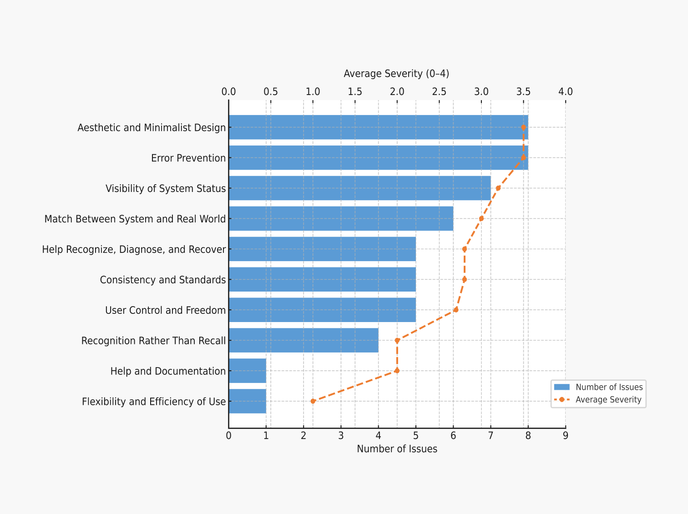
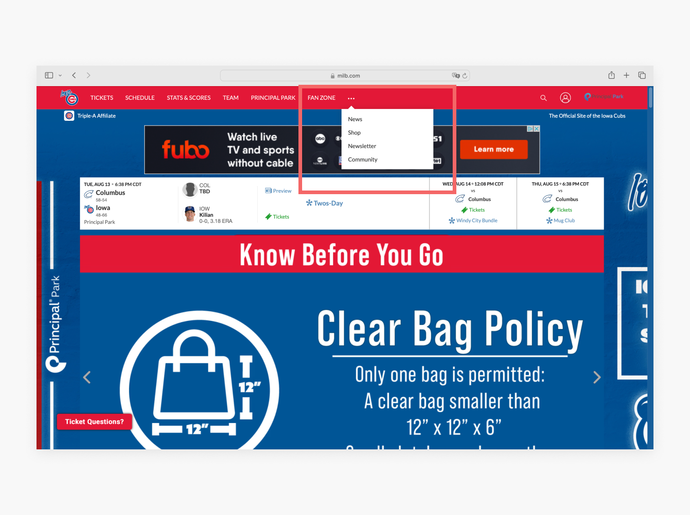
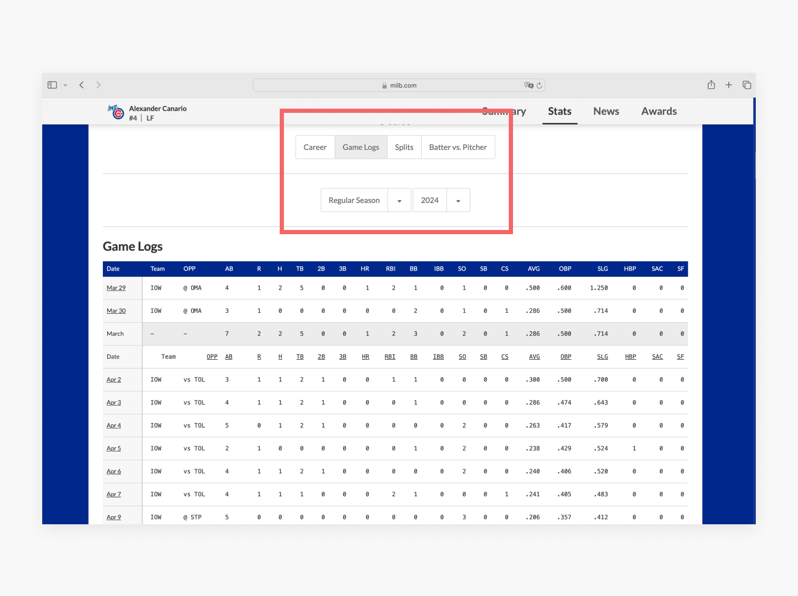
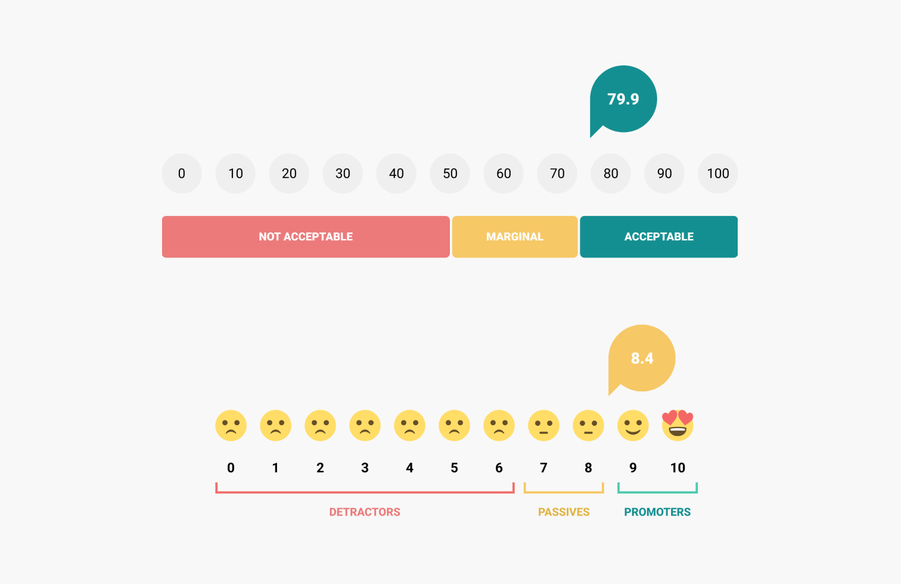
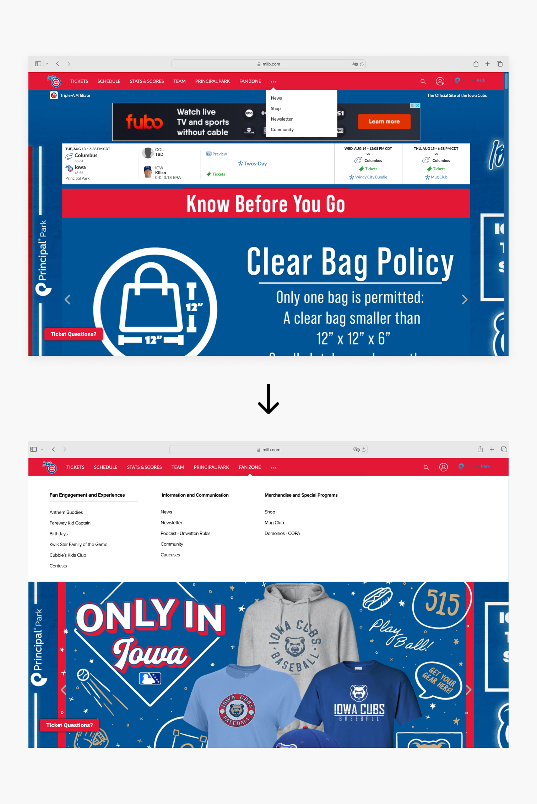
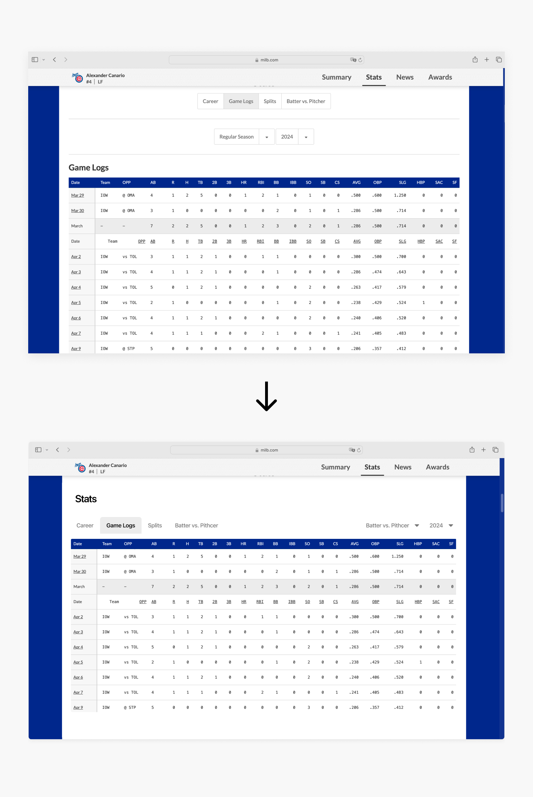

Improving Usability on the Iowa Cubs Website Through Testing & Evaluation
Enhancing the fan experience through expert reviews and real user testing to uncover and solve navigation and labeling issues.

- UX Designer
- UI Designer
- Researcher
- Ashley DeLarm
- Karly Greenfield
- Clarissa Hyun
- Haruto Matsushima
- Figma
- Google Docs
- 8 Weeks, Summer 2024
- School Project at DePaul
Brief
In the summer of 2024, our team conducted a usability evaluation of the Iowa Cubs website as part of a university project. The goal was to assess how intuitive and effective the site is for sports fans, particularly when performing key tasks like purchasing tickets, exploring merchandise, and viewing player statistics. As a team, we collaborated on research planning and testing. My primary contributions included creating a usability evaluation spreadsheet based on heuristic criteria and leading the UI redesign efforts informed by user insights and task performance data.
Challenge
After conducting usability testing, we identified three key challenges that impacted user experience:
- Inconsistent and unintuitive navigation made it difficult for users to find the merchandise store and player stats.
- Unclear labels — terms like “Individual Tickets” and “Game Logs” caused confusion and slowed task completion.
- Important pathways such as guest checkout and direct access to player data were hidden or poorly organized.
Recommendations
Our study led to three core recommendations:
- Relocate or clearly surface the "Shop" link to improve merchandise discoverability.
- Simplify and restructure the player statistics page for easier access and understanding.
- Important pathways such as gueClarify labeling and improve consistency across the navigation.
Usability Testing Process
- Heuristic Evaluation: Identified usability issues focusing on unclear labels, poor navigation, and design inconsistencies.
- Cognitive Walkthrough: Evaluated how usability issues impacted completion of 3 core tasks.
-
Usability Testing: Conducted with 5 participants using screen sharing, assessing the following tasks:
- Purchasing a ticket
- Buying a men’s team jersey
- Viewing player statistics
Initial Analysis
Heuristic Evaluation Results
We began with a heuristic evaluation based on Nielsen Norman Group’s Ten Usability Heuristics to identify usability issues across the site. Using their severity rating scale, we assessed each issue on a scale from 0 (minor) to 4 (critical). This process surfaced 50 usability problems, primarily involving unclear labels, inconvenient navigation, and inconsistent design elements. These findings guided the priorities for our subsequent usability testing.

Initial Analysis
Cognitive Walkthrough Results
Following the heuristic evaluation, we conducted a cognitive walkthrough using four key questions to evaluate the site’s learnability and assess how users interact with the interface.
- Will users try to achieve the right result?
- Will users notice that the correct action is available?
- Will users associate the correct action with the result they’re trying to achieve?
- After the action is performed, will users see that progress is made toward the goal?
This method helped us pinpoint areas where new users—especially patients unfamiliar with the system—may encounter friction. We focused on what we identified as the main tasks on the website: purchasing tickets, buying merchandise, and viewing player statistics.
| Task | Actions | Failures | Success Rate | Key Concerns |
|---|---|---|---|---|
| Purchasing Tickets | 11 | 4 | 64% | Ambiguous labels like "Individual Tickets", no guest checkout option, unclear feedback |
| Buying Merchandise | 11 | 3 | 73% | "Shop" label hidden, necessary steps obscured, unclear checkout |
| Checking Player Stats | 6 | 2 | 67% | Unclear labeling like "Individual Stats", poor navigation structure |
Usability esting
Usability Testing Methodology
Building on insights from our heuristic evaluation and cognitive walkthrough, we moved into usability testing to validate our assumptions and observe how real users interacted with the Iowa Cubs website. We conducted online moderated usability testing with participants over Google Meet, incorporating a screener survey, pre-test questionnaire, pre-task surveys, post-task surveys, and a post-test questionnaire. These sessions allowed us to observe participants’ natural interactions, understand their decision-making processes, and capture real-time feedback.
Participants
We recruited five participants through convenience sampling. Each participant was required to be 18 years or older and have an interest in sports. Being a Cubs fan was not required, as we wanted to avoid potential learning bias from participants already familiar with the site. Eligibility was verified through a screener survey. Below is the demographic information of our participants:
| Participant Number | Age | Occupation | Follows Sports? | Date of Test |
|---|---|---|---|---|
| 1 | 20 | Graduate Student | Yes | 8/1/2024 |
| 2 | 25 | Graduate Student | Yes | 8/1/2024 |
| 3 | 58 | Software Engineer | Yes | 8/1/2024 |
| 4 | 25 | GNC Engineer | Yes | 8/2/2024 |
| 5 | 26 | Teacher | Yes | 8/3/2024 |
Tasks Evaluated
Participants were asked to complete three common tasks on the Iowa Cubs website:
- Purchasing a ticket for a game
- Purchasing a men’s team jersey
- Checking a player’s statistics for the current season
Metrics
To evaluate usability more deeply, we implemented a combination of qualitative and quantitative research methods.
Behavioral Metrics
- Click Path: navigation paths followed by users
- Success Rate: percentage of successful task completions
- Number of Errors: mistakes made during task completion
- Completion Time: time taken to complete tasks
- Verbal Reactions: user comments and feedback during testing
Attitudinal Metrics
- Pre-test Questionnaire: captured users' baseline familiarity and expectations
- In-task Questionnaire: gathered real-time feedback during task execution
- Post-test Questionnaire: included System Usability Scale (SUS) and Net Promoter Score (NPS) to measure overall satisfaction
Usability Testing
Usability Testing Results
Users found the website to be relatively easy to navigate. The most frustration came from looking for and navigating the store page in Task 2, but the most failure in completing the task comes from trying to go to a player’s game logs in Task 3. On average, Task 1 takes the longest, which makes sense since it’s the task with the most steps. Task 3 was on average the task with the shortest average time but with the most failures.
Task 1: Ticket Purchase
Overall, users had little difficulty purchasing tickets, with a 100% success rate. Most bypassed the price range and quantity sliders, opting instead to select seats directly on the map—4 out of 5 participants followed this approach. One participant (P2) took significantly longer (475 seconds) after getting lost in the various ticket options and not realizing that multiple tickets could be purchased under "Individual Tickets." The rest of the participants completed the task in 115–205 seconds. This indicates that while the task is ultimately doable, the multiple pathways available may create unnecessary confusion.
Task 2: Merchandise Purchase
Users encountered the most difficulty when attempting to purchase merchandise, with a success rate of only 60%. The main challenge was locating the shop page. Two out of five participants accessed the store efficiently via the homepage hero banner, completing the task in just 69–82 seconds. The remaining users took significantly longer—between 91 and 315 seconds. Two users initially looked in the “Fan Zone,” assuming that’s where the shop would be. P2 followed a link to a Cubs hat but landed on an Indianapolis Indians jersey, causing confusion before navigating back. P3 had trouble finding their size and spent 145 seconds clicking through unrelated listings. Additionally, 4 out of 5 participants browsed the store manually rather than using category filters, suggesting improvements are needed in both labeling and filtering functionality.

Task 3: Viewing Player Statistics
The stats task had the lowest success rate, with only 2 out of 5 users (40%) completing it successfully. While users didn’t outwardly express confusion, their navigation patterns revealed difficulty locating the “Game Logs” section. One user later shared that they were familiar with the page but still couldn’t find it during the test. P4 accidentally navigated to a completely different website and had to restart. The user with the longest time (315 seconds) spent it exploring various stats pages, while another user (123 seconds) followed a homepage banner but got sidetracked by unrelated prospect rankings, ending up on a page where “Game Logs” weren’t accessible.

SUS & NPS
The average System Usability Scale (SUS) score was 79.9, indicating a strong overall perception of usability. Additionally, the Net Promoter Score (NPS) averaged 8.4, suggesting that most users would recommend the website. However, individual scores varied due to difficulties with navigation — particularly during tasks involving merchandise and player stats. These issues affected how confident users felt while completing tasks and influenced their willingness to promote the experience to others.

Design Recommendations
1. Move "Shop" link under "Fan Zone" or give it a more prominent placement.
By observing the click paths, we saw that three participants hovered over 'FAN ZONE,' suggesting they expected 'Shop' to be there. This indicates a mismatch between the users’ mental model and the website’s structure — violating the heuristic “match between system and the real world.” To address this, we relocated the shop items under the 'FAN ZONE' category.

2. Simplify stats page by repositioning filters closer to scoreboards and decluttering the layout.
The original player stats page felt visually cluttered, violating key design principles such as "Minimalist Design" and "Design Consistency." The use of excessive dividing lines created unnecessary separation between elements, making it difficult for users to understand the relationship between the scoreboard and filter options. To address this, we introduced a simplified navigation bar placed at the top right of the Game Logs section, with filter items neatly aligned to the right of the bar. This layout improves visual hierarchy and helps users scan and interact with the content more intuitively.

Reflection
1. Refine Menu Structure with Card Sorting & Tree Testing
We would begin by conducting card sorting and tree testing to evaluate and refine the menu headings in the merchandise store. This would help us better understand how participants interpret the content and ensure the navigation structure feels intuitive.
2. Improve Stats Page Filtering
Next, we would enhance the sorting and filtering options on the stats page to make it easier for users to locate specific player statistics and game data—directly addressing the confusion observed in initial testing.
3. Conduct Follow-Up Usability Testing
After implementing those changes, we would conduct another round of usability testing to evaluate the impact of our updates. Comparing new results with earlier feedback will help us assess whether the issues have been effectively addressed.
4. Review Feedback and Iterate
Finally, we would analyze feedback and performance data from the follow-up tests to verify that the improvements meet user needs. Based on those insights, we would continue refining the design to further enhance the user experience.